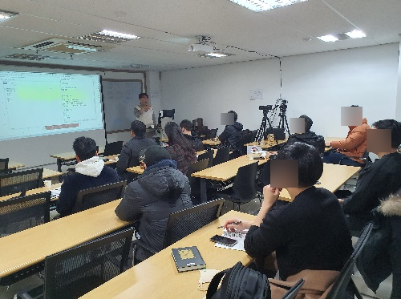

PART 01
왜 시작됐는가
개인 스토리, 160,000팀, 매장과 공동구매 경험을 통해 왜 사람을 먼저 읽게 되었는지 보여줍니다.
KFA EDU · Morning Session
기존 강의자료와 전체 스크립트를 다시 맞추고, 공식 자료를 보강해 100분 흐름으로 정리한 수업안입니다. 스토리는 더 자연스럽게, 근거는 더 단단하게 가져갔습니다.
강의 중 바로 열어볼 수 있게 실제 진단 시작 주소를 QR로 연결했습니다. 스캔이 안 될 때는 아래 링크를 눌러도 바로 이동됩니다.
https://koreafruit.kr/tstc-start.html


PART 01
개인 스토리, 160,000팀, 매장과 공동구매 경험을 통해 왜 사람을 먼저 읽게 되었는지 보여줍니다.
PART 02
시장 변화, 생애주기, 구매결정권자, TSTC 4축과 3가지 시선으로 과일 경험을 해석하는 법을 정리합니다.
PART 03
키즈, 웨딩, 실버, 기업 ESG까지 과일코디네이터가 실제로 들어갈 수 있는 시장을 현실적으로 제안합니다.
매출 하락의 원인을 과일 품질이 아니라 지역 주거 구조와 고객층 이동에서 찾았습니다.
부동산 고객 선물을 과일로 바꾸는 제안으로 "이사 오는 사람의 첫 과일"을 설계했습니다.
매장이라는 틀을 벗어나 밴드 공동구매로 이동하며 2시간 380만원의 새로운 장면을 만들었습니다.
강의 자료에서는 이 장면을 더 분명히 보여줘야 합니다. 기존 슬라이드는 시장 수치가 먼저 나왔지만, 실제로는 이 깨달음이 먼저 와야 TSTC와 과일코디네이터가 왜 필요한지 자연스럽게 이어집니다.
결국 이 파트의 메시지는 단순합니다. 과일이 안 팔린 게 아니라, 나와 고객의 만나는 방식이 어긋난 것이라는 점입니다.

엄마들의 고민은 건강이기도 하지만, 더 직접적으로는 아이가 안 먹는다는 데 있습니다.
신혼부부에게 직접 가는 길도 좋지만, 웨딩 플래너라는 중간 영업 채널을 읽는 것이 더 현실적입니다.
건강, 복지, 병문안, 기업 ESG와 연결되면 과일은 단순 식품이 아니라 제안서의 한 항목이 됩니다.

함께 만든 보조 문서도 바로 이어서 볼 수 있게 정리했습니다. 발표용 스크립트와 출처 페이지까지 연결됩니다.